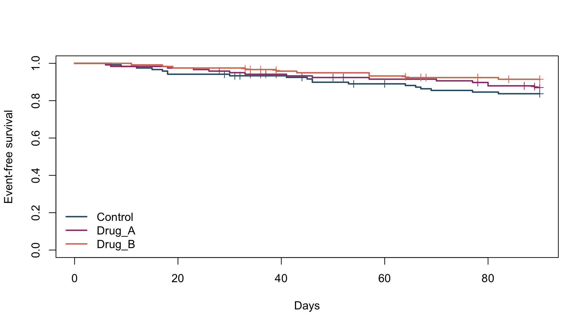
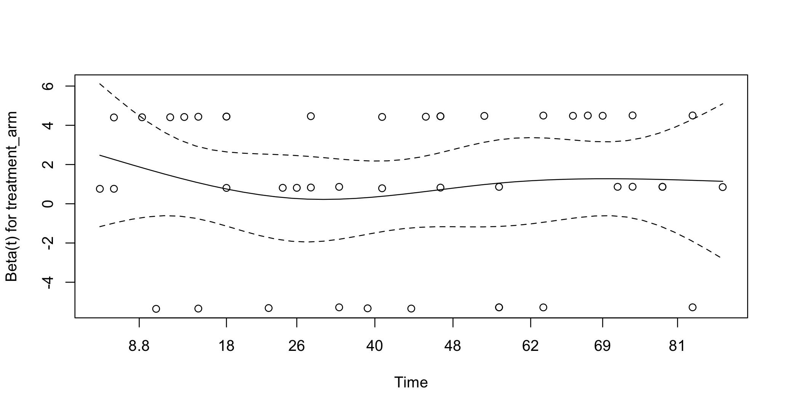

Survival analysis is used when the outcome is time until an event, while allowing for participants who do not experience the event during follow-up.
A participant who remains event-free at the end of follow-up is censored. The exact event time is unknown, but the participant is known to have remained event-free up to the last observed time.
For example, if a participant has no event by day 90,
\[ T>90. \]
surv_dat |>
group_by(treatment_arm) |>
summarise(n=n(),
events=sum(event_observed_90d==1),
censored=sum(event_observed_90d==0),
.groups="drop") |>
kbl(digits=0,caption="Events and censoring by treatment group")| treatment_arm | n | events | censored |
|---|---|---|---|
| Control | 120 | 19 | 101 |
| Drug_A | 120 | 15 | 105 |
| Drug_B | 120 | 10 | 110 |
The precision of survival analyses depends strongly on the number of observed events.
The Kaplan–Meier method estimates the probability of remaining event-free beyond time \(t\):
\[ S(t)=P(T>t). \]
surv_obj <- survival::Surv(surv_dat$time_to_event_days,
surv_dat$event_observed_90d)
km_fit <- survival::survfit(surv_obj~treatment_arm,data=surv_dat)
summary(km_fit,times=c(30,60,90))
#> Call: survfit(formula = surv_obj ~ treatment_arm, data = surv_dat)
#>
#> treatment_arm=Control
#> time n.risk n.event survival std.err lower 95% CI upper 95% CI
#> 30 112 8 0.933 0.0228 0.890 0.979
#> 60 102 5 0.890 0.0288 0.835 0.948
#> 90 95 6 0.837 0.0342 0.773 0.907
#>
#> treatment_arm=Drug_A
#> time n.risk n.event survival std.err lower 95% CI upper 95% CI
#> 30 114 6 0.950 0.0199 0.912 0.990
#> 60 103 4 0.915 0.0257 0.866 0.967
#> 90 95 5 0.870 0.0313 0.811 0.934
#>
#> treatment_arm=Drug_B
#> time n.risk n.event survival std.err lower 95% CI upper 95% CI
#> 30 117 3 0.975 0.0143 0.947 1.000
#> 60 108 5 0.932 0.0231 0.888 0.979
#> 90 101 2 0.915 0.0258 0.865 0.967plot(km_fit,col=unname(pal),lwd=2,mark.time=TRUE,
xlab="Days",ylab="Event-free survival",conf.int=FALSE)
legend("bottomleft",legend=levels(surv_dat$treatment_arm),
col=unname(pal),lwd=2,bty="n")
Figure 24.1: Kaplan–Meier event-free survival by treatment group.
The log-rank test provides a global comparison of the survival curves.
survival::survdiff(surv_obj~treatment_arm,data=surv_dat)
#> Call:
#> survival::survdiff(formula = surv_obj ~ treatment_arm, data = surv_dat)
#>
#> N Observed Expected (O-E)^2/E (O-E)^2/V
#> treatment_arm=Control 120 19 14.4 1.49617 2.2271
#> treatment_arm=Drug_A 120 15 14.6 0.00919 0.0138
#> treatment_arm=Drug_B 120 10 15.0 1.66808 2.5377
#>
#> Chisq= 3.2 on 2 degrees of freedom, p= 0.2A small p-value indicates evidence that survival differs across treatment groups.
The Cox model estimates how treatment or other predictors are associated with the hazard of experiencing the event:
\[ h(t\mid X)=h_0(t)\exp(\beta^TX), \]
where \(h_0(t)\) is the baseline hazard.
Exponentiating a coefficient gives a hazard ratio:
\[ HR=e^\beta. \]
A hazard ratio below 1 indicates a lower hazard, while a value above 1 indicates a higher hazard relative to the reference group.
cox_trt <- survival::coxph(
survival::Surv(time_to_event_days,event_observed_90d)~treatment_arm,
data=surv_dat,ties="efron"
)
broom::tidy(cox_trt,exponentiate=TRUE,conf.int=TRUE) |>
kbl(digits=3,caption="Treatment Cox proportional-hazards model")| term | estimate | std.error | statistic | p.value | conf.low | conf.high |
|---|---|---|---|---|---|---|
| treatment_armDrug_A | 0.775 | 0.345 | -0.739 | 0.460 | 0.394 | 1.525 |
| treatment_armDrug_B | 0.504 | 0.391 | -1.756 | 0.079 | 0.234 | 1.083 |
A hazard ratio compares the instantaneous hazard among participants who are still at risk. It should not be interpreted as a risk ratio at a fixed time point.
The Cox model assumes that the hazard ratio is approximately constant over time.
cox_ph <- survival::cox.zph(cox_trt)
cox_ph
#> chisq df p
#> treatment_arm 0.227 2 0.89
#> GLOBAL 0.227 2 0.89
Figure 24.2: Schoenfeld-residual diagnostic for the Cox model.
A small p-value or a clear time-related pattern suggests that the proportional-hazards assumption may not hold. If so, the appropriate alternative depends on how the treatment effect changes over time and on the scientific question.
These models describe different types of outcomes:
| Model | Outcome | Effect measure |
|---|---|---|
| Logistic regression | whether an event occurred | odds ratio |
| Poisson or negative binomial regression | number of events | count or rate ratio |
| Cox regression | time until an event | hazard ratio |
The model should be chosen according to the outcome and the effect of interest.